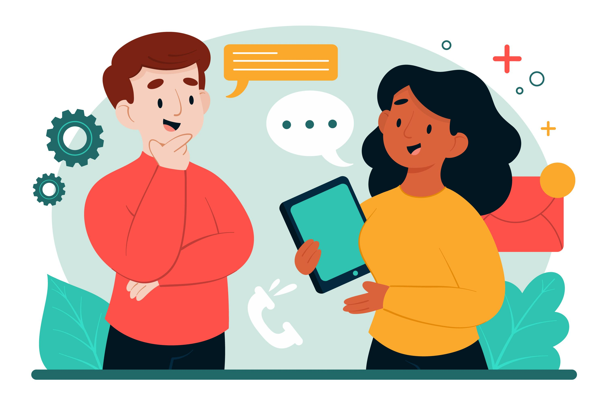

Tecnologia para Todos,
Acesso para Cada Um.
O Inclusão.net promove a inclusão digital, transformando barreiras em pontes. Oferecemos recursos e orientações para que o mundo digital seja um lugar acolhedor e acessível para todas as pessoas.

Central de Ferramentas Úteis
Conversão de Documentos
Converta PDFs e outros arquivos de forma gratuita e acessível.
Acessar FerramentaVerificador de Contraste
Analise se as cores do seu site atendem aos padrões de acessibilidade.
Verificar CoresBiblioteca de Recursos
Guias de Acessibilidade
Manuais completos em PDF para desenvolvedores e usuários finais.
Baixar Guia PDFChecklists de Verificação
Listas práticas para garantir a inclusão em seus projetos digitais.
Baixar Checklist